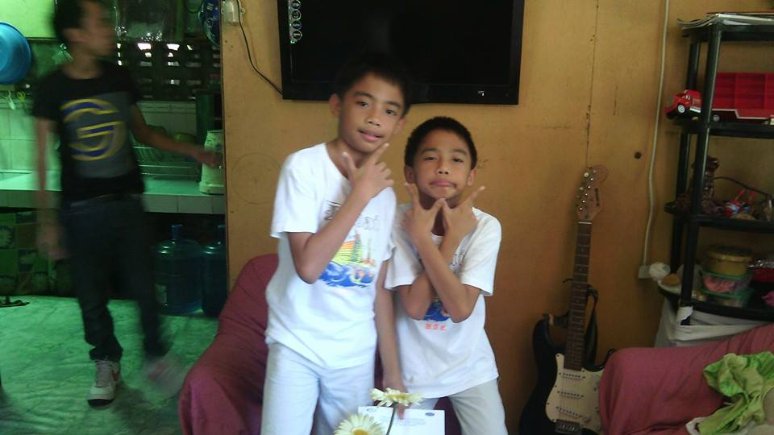
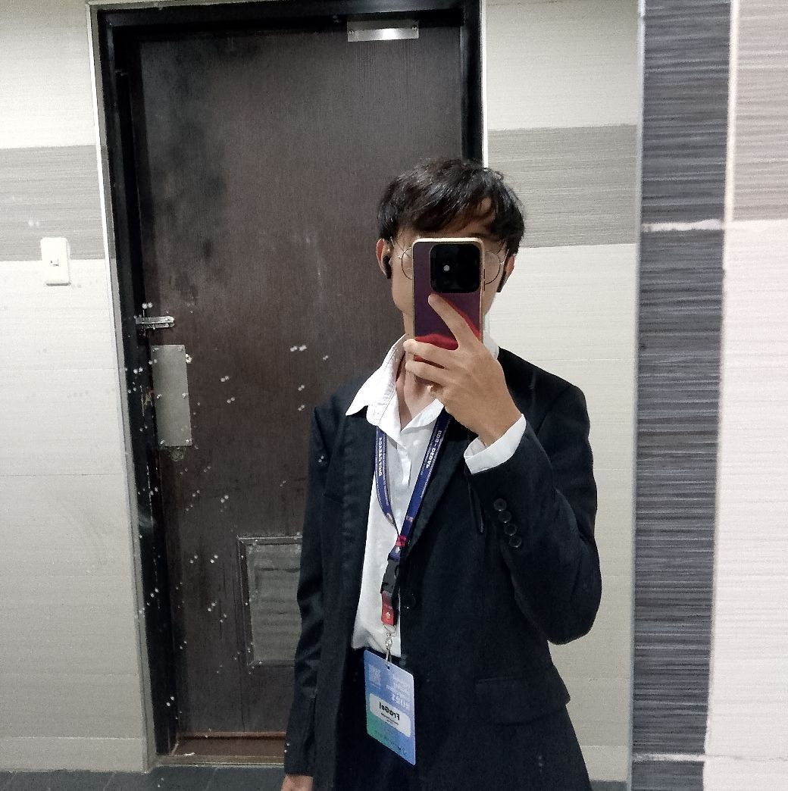
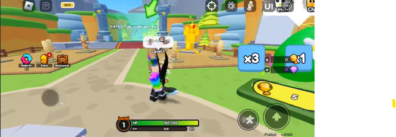
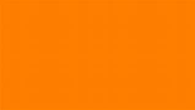

My name is Franz Marc E. Gelicame. I'm 20 years old. I'm a college students taking up Bachelor of Science in Computer Science. My passion is to be able to program and make a system to be utilized by people. It motivates me in every sytem I make and would be glad to be the reason on why a certain company or group is striving. I love logical things and specially math and that's why I chose Computer Science as my Course and the field I'm persuing.
Willing to help other people! That's my most notable characteristics. Whenever I have time, I do my best to lend a hand to other people, specially to my classmates and other students who are struggling in their field. Me, as a computer geek, will stick my nose to every possible opportunity to show off what I had achieved and to also gain experience from their set of problems.
My Lifestory
Childhood

(early childhood image with my twin)
In my early childhood, we had a glorious home. That place was the memory lane in my life. Full of ecstatic things left in that place and it makes me happy whenever I get to visit the place again. Our family was unstaggered by the overwhleming love and support between our parents. My parents have 4 sons, including me which is the youngest (I have a twin so deciding who is the youngest is debatable). As we grow up, we experienced alot of things, exposed to such technologies like computers at such an early age makes me more leaning to computing rather than playing outside.
Teenage
(picture of me at junior highschool)
Reaching my teenage days, after graduating from Elementary, there was a quarrel between my parents so they had to make us move to Nasipit for our highschool. There, my parents became distant, and as time goes on, thier relationship became worse and worse. In my end however has become more free and independent. My teenage life has never been so lively and memorable. I became more interested in programming when we heard about a coding application about games called "Roblox Studio" and it made me more invested in Object Oriented Programming. Further Development in myslef has skyrocketed when I achieved awards in my class as 1st honor, etc. My highschool life was lively.
Adulthood

(picture of me at present, covering my face with my phone)
Entering college and picking my dream course, I have become more prominent in computing. The abundance of knowledge and skills I've applied in these subjects was very worth my works in the past. Now I was able to achieve many things that had proved me a better CS student. I also had applied as a Student Assistant in my school and had never been this loaded in my life. Overall, a very great position in my life, would love it. My parents however is still on shambles.
Hobbies
Indoor

(picture of a game I played in roblox)
The indoor hobby that I always do and would literally freak out and out of my mind when not done everyday is playing videogames. For my addiction, this has been my medicine for my stress and the bad reality I am facing. Videogaming has become a great part of my life as it entertains me everytime I can't cope of my problems. Just ignore the problem and slack off!
Outdoor
(picture of a bike being driven in first person perspective)
Whenever I get a free time (which is pretty seldom), I take my time to drive in the roads. It relieves me some stress by visiting places I had never before. The good thing about this is I get to choose wherever I go. As soon as I get to have my own motorcycle, I couldn't help but always use my bike. The end!
Favorites
Food
(A pciture of a french fries)
My favorite food is not even a meal but a snack. French fries is over powered and should be nerfed in real life! It's too good and should be removed from existence because it had made me poor because I kept purchasing it! BAN FRIES!
Artists
(picture of a beloved artist)
He has made wonderful paintings in the past. His paintings are extraordinary that he was banned by an Art School for being too good. He also is good at art of war and can lead a nation through success! His name is Adolf Hitler!!!!
Color

(color of blue)
The color blue is my favorite. It calms my whenever I see it. Also, it's rare in nature. Anything blue in nature, be it living or non-living things, is very beautiful as always :)